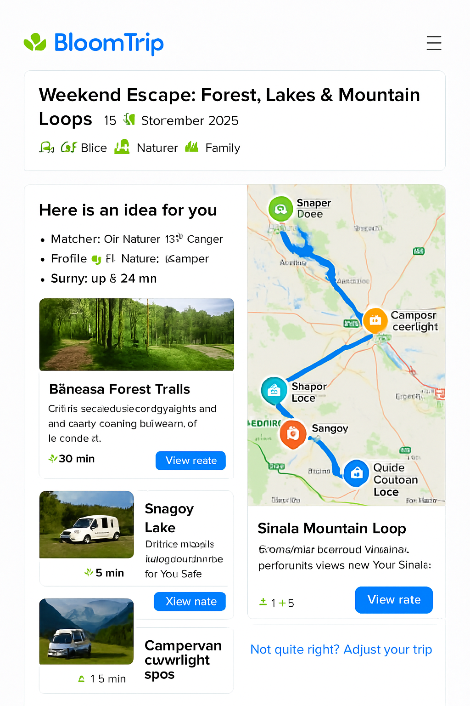
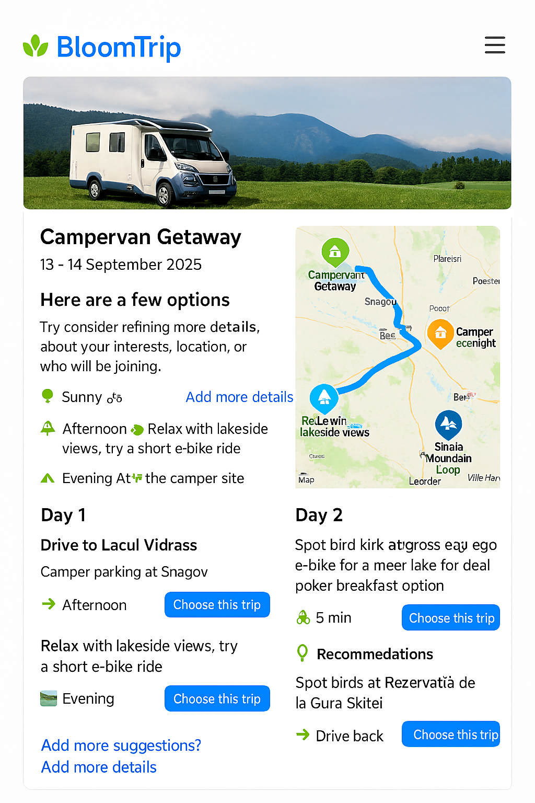

Itinerary Page Mockup: Forest, Lakes & Mountain Loops¶
 Figure 3. Core itinerary detail layout with dual column: editable day segments (left) and interactive map with custom BloomTrip markers (right).
BloomTrip-style detailed itinerary view with embedded map (Google or Bing) highlighting Băneasa Forest trails, Snagov Lake, Moara Vlăsiei, and mountain loops near Sinaia using a custom rounded, nature‑inspired icon set.
1. Purpose & Position in Flow¶
This page appears after a user taps “Choose this trip” from a divergent / broad results screen (see search-refinement.md). It transitions the user from idea exploration to trip planning ownership.
Key goals:
- Provide immediate visual context (hero + interactive map).
- Explain “Why it matches” (transparency + trust).
- Offer structured, editable Day-by-Day plan.
- Enable lightweight personalization before commitment (swap, adjust duration, companions, budget lens).
- Instrument feedback loops (Save, Boost Similar, Mute, Explain Choice).
2. Page Structure (High-Level Wire Blocks)¶
- Header Card: Title, date window selector, profile tags, weather snippet.
- Match Rationale Panel: Signals that fired (interests, weather window, distance radius).
- Dual Layout Region (responsive):
- Left: Day / Segment cards (scrollable column).
- Right: Embedded Map (sticky on desktop, collapsible on mobile).
- Personalization Tray: Inline controls (Swap, Add Day, Adjust Pace, Budget Filter toggle).
- Logistics Strip: Drive segments, charging points, facilities.
- Save / Share / Export Bar.
- Feedback Footer: Micro-actions + “Not quite right? Adjust your trip”.
3. Map Integration Options¶
| Aspect | Google Maps JS API | Bing Maps Web Control | Neutral (Leaflet / Vector Tiles) |
|---|---|---|---|
| Route Rendering | Directions + polylines styling | Directions + custom layer | Use precomputed polyline / GeoJSON |
| Custom Icons | new google.maps.Marker({icon: svg}) |
Microsoft.Maps.Pushpin w/ SVG |
Full SVG markers via layer |
| Offline / Caching Strategy | Limited (Terms) | Limited | Tile + route caching possible |
| Licensing | API key / usage based | Key w/ usage tiers | Depends on tile source |
Decision (MVP): Support Google + Bing provider abstraction via a MapProvider interface so itinerary JSON is provider-agnostic.
interface MapProvider {
init(container: HTMLElement, opts: { center: [number, number]; zoom: number }): Promise<void>;
addMarker(poi: PoiMarker): void;
addRoute(route: EncodedRoute | GeoJSON.FeatureCollection): void;
highlight(id: string): void;
fitTo(ids: string[]): void;
}
4. Custom Icon System¶
Design principles: rounded corners, subtle shadow (elevation 1), saturated organic palette, white inner pictogram.
| Semantic | Color (Hex) | Icon Concept | Example ID |
|---|---|---|---|
| Forest Trail | #2E8F48 |
Leaf / path swirl | poi_forest |
| Lake / Water | #0D84D9 |
Gentle wave triple | poi_lake |
| Cultural Stop | #FF8A34 |
Stylized arch / column | poi_culture |
| Camp / Camper | #1B74D2 (outline) + green dot |
Camper silhouette | poi_camper |
| Scenic View | #6F4DF5 |
Mountain + sun | poi_view |
SVG Marker Template (12px corner radius):
<svg width="48" height="56" viewBox="0 0 48 56" fill="none" xmlns="http://www.w3.org/2000/svg">
<defs>
<filter id="drop1" x="-4" y="-4" width="56" height="64" filterUnits="userSpaceOnUse">
<feOffset dy="2"/><feGaussianBlur stdDeviation="2"/><feColorMatrix type="matrix" values="0 0 0 0 0 0 0 0 0 0 0 0 0 0 0 0 0 0 0.15 0"/><feBlend mode="normal" in2="BackgroundImageFix" result="shadow"/>
</filter>
</defs>
<g filter="url(#drop1)">
<path d="M24 56c8-14.4 22-20.4 22-34A22 22 0 0 0 2 22c0 13.6 14 19.6 22 34Z" fill="#2E8F48"/>
<circle cx="24" cy="22" r="12" fill="white"/>
<!-- Replace inner glyph -->
<path d="M20 26c4-6 4-10 8-12-1 4-1 8-8 12Z" fill="#2E8F48"/>
</g>
</svg>
Replace color + internal glyph per semantic.
5. Sample Itinerary Map Payload (Provider-Agnostic)¶
{
"tripId": "forest_lake_mountain_weekend_2025_09_13",
"center": [44.65, 26.20],
"zoom": 8,
"pois": [
{"id": "baneasa_forest", "name": "Băneasa Forest Trails", "kind": "forest", "coords": [44.5299, 26.0802], "activities": ["e-bike","nature"], "durationMin": 30},
{"id": "snagov_lake", "name": "Snagov Lake", "kind": "lake", "coords": [44.6944, 26.1900], "activities": ["picnic","kayak"], "durationMin": 60},
{"id": "moara_vlasiei", "name": "Moara Vlăsiei", "kind": "culture", "coords": [44.6805, 26.0487], "activities": ["ride","lunch"], "durationMin": 45},
{"id": "sinaia_loop", "name": "Sinaia Mountain Loop", "kind": "view", "coords": [45.3506, 25.5474], "activities": ["trail","scenic"], "durationMin": 120}
],
"routes": [
{"id": "segment_day1_forest_to_snagov", "polyline": "_seI}u~hC...", "color": "#0D84D9", "mode": "drive"},
{"id": "segment_day2_snagov_to_sinaia", "polyline": "ymvJc`d~E...", "color": "#2E8F48", "mode": "drive"}
],
"meta": {"units": "metric", "generatedAt": "2025-09-05T08:30:00Z"}
}
(Polylines truncated.)
6. Embedding Examples¶
Google Maps (simplified)¶
<div id="map" style="height:480px"></div>
<script src="https://maps.googleapis.com/maps/api/js?key=YOUR_KEY&libraries=maps"></script>
<script type="module">
import data from './itinerary.json' assert { type: 'json' };
const map = new google.maps.Map(document.getElementById('map'), {center:{lat:data.center[0],lng:data.center[1]}, zoom:data.zoom});
const iconFor = kind => ({ url: `/icons/${kind}.svg`, scaledSize: new google.maps.Size(48,56) });
data.pois.forEach(p => new google.maps.Marker({map, position:{lat:p.coords[0],lng:p.coords[1]}, icon: iconFor(p.kind), title: p.name}));
// Decode polyline example (requires polyline decoder util)
</script>
Bing Maps (simplified)¶
<div id="map" style="height:480px"></div>
<script type="text/javascript" src="https://www.bing.com/api/maps/mapcontrol?key=YOUR_KEY" async defer></script>
<script>
function loadMapScenario(){
fetch('itinerary.json').then(r=>r.json()).then(data => {
const map = new Microsoft.Maps.Map('#map',{ center: new Microsoft.Maps.Location(data.center[0], data.center[1]), zoom: data.zoom });
data.pois.forEach(p => {
const pin = new Microsoft.Maps.Pushpin(new Microsoft.Maps.Location(p.coords[0], p.coords[1]), { icon: `/icons/${p.kind}.svg`, anchor: new Microsoft.Maps.Point(24,56) });
map.entities.push(pin);
});
});
}
</script>
7. Interaction Model¶

| Action | Result |
|---|---|
| Hover / Tap POI card | Map marker pulses + route segment highlight (thicker stroke) |
| Map marker click | Scrolls corresponding segment card into view + brief rationale toast |
| Swap Activity | Opens modal listing compatible alternatives (same difficulty tag) |
| Adjust Duration | Regenerates affected route segments + recalculates drive time slack |
| Budget Filter | Re-colors costlier POIs (amber) + suggests cheaper substitutes |
| Save / Boost Similar | Stores vector embedding for reinforcement + logs telemetry |
Keyboard support: Tab cycles markers → pressing Enter focuses card. ARIA labels include name, activity types, estimated duration.
8. Accessibility & Internationalization¶
- WCAG AA contrast for marker inner glyph (white on saturated base > 4.5:1).
- Provide text alt list of POIs beneath map for screen readers.
- Use locale-aware formatting for distance/time (e.g., km vs mi).
- Diacritics preserved for Romanian names (UTF‑8, no ASCII fallback).
9. Performance Considerations¶
| Concern | Mitigation |
|---|---|
| First Paint Delay | Lazy-load map script after header visible (IntersectionObserver). |
| Marker Jank | Batch marker adds inside requestIdleCallback for large sets. |
| Excess Route Decoding | Pre-simplify polylines server-side (Douglas-Peucker). |
| Mobile Memory | Offer static preview image → tap to load full map. |
10. Telemetry Events¶
| Event | Payload Snippet |
|---|---|
itinerary_view |
{ tripId, profileTags, weatherWindow } |
poi_focus |
{ tripId, poiId, source: 'map|list' } |
swap_requested |
{ tripId, segmentId, originalPoiId } |
duration_adjust |
{ tripId, deltaDays } |
export_invoke |
{ tripId, format: 'pdf|calendar' } |
feedback_action |
{ tripId, targetId, action: 'save|boost|mute' } |
11. Data Model Alignment¶
Each POI maps to a Petal (see specs/petal_schema.md) and segments aggregate petals into a TripDay. Route metadata supplements petal relational edges (sequence + segment travel mode).
12. Future Enhancements¶
- Offline snapshot (static vector tile + simplified polylines).
- 3D terrain preview for mountain segments.
- Battery consumption estimator for e‑bike legs.
- Collaborative live editing (WebSocket diff sync).
- Heatmap overlay (popular paths vs personal recommendations).
13. Cross-Links¶
- Source Itinerary Preview:
weekend-bucharest-ebike.md - Divergent Search Entry Point:
search-refinement.md - RAG Flow & Caching:
rag_pipeline.md(for regeneration triggers)
Last updated: 2025-09-05